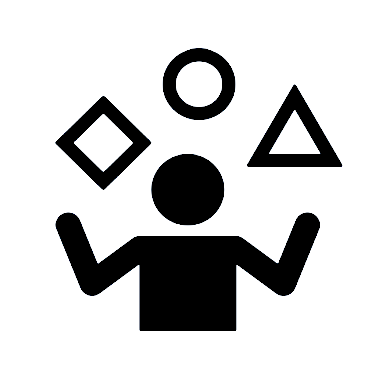
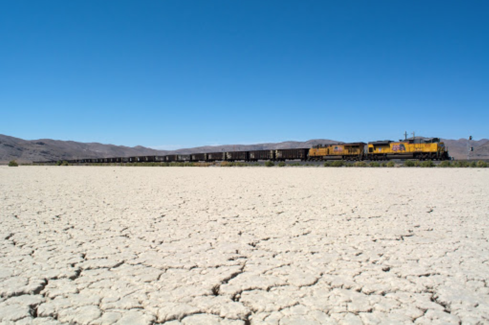

I'm building a background in entrepreneurship and data innovation, out of a passion to change the status quo.
> B.S. 2020, Industrial Engineering & Operations Research | University of California, Berkeley
(Business management, from the quantitative side of things.) > Certificate in Entrepreneurship and Technology, SCET at Berkeley
(Practicing startup creation within Berkeley's Method of Entrepreneurship.)
I've tackled data-driven projects — especially those with
multi-disciplinary, startup-focused challenges.
Legally
Law Made Easy

Course-to-Career
Matching Student to Career
Betblox
Gambling With Blockchain

Project SFBR
Database for Railroad
In difficult situations, it's important for me to be analytical while having an optimistic perspective.
Current Positions:
> Community Manager for CatalistX.
> Student Intern for the Engineering Leadership Professional Program @ SCET. Click icon for a Resume PDF.
Let’s connect! I'm full of creative ideas and open to new opportunities.
"In the realm of ideas everything depends on enthusiasm...
in the real world, all rests on perseverance."
- Johann Wolfgang von Goethe